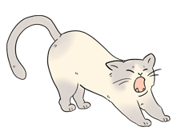

死神少女、最初の取引【1話】
「取引しませんか？」——寿命と引き換えに願いを叶えるという少女が、ある日突然訪ねてくる。「寿命40年、いただきます」。すべての始まりとなる、運命の出会いの物語。
サブチャンネル
寿命と引き換えに願いを叶える力を持つ死神少女。サブチャンネルの中で最も重いストーリーが展開される。
寿命と引き換えに願いを叶える力を持つ
死神少女。サブチャンネルの中で最も重い
ストーリーが展開される。
2024年12月に最初の動画が投稿された、サルベドシリーズの中で最も異色なチャンネル。総集編の特典から専用チャンネルへと生まれ変わった「死神少女」の歩みをご紹介します。
2024年12月に最初の動画が投稿された、サルベドシリーズの中では最も異色なチャンネル。元々は本家サルベドに投稿されていたシリーズで、初めて第一話が投稿された時は、まだサルベドがラブコメジャンル以外にも手を出していた時期だった。
しかしそこからラブコメジャンルに舵を切ったことで死神少女はジャンル違いとなり、第二話以降は総集編の最後に特典的な感じでつけられるようになった。
死神少女目的で総集編を見てくれるファンの方も多くいて、「死神少女だけでまとめてほしい」という声が複数上がったことでチャンネル化を決意。
脚本はそのままに、イラスト、声優を全てリニューアルする形で専用チャンネルとして生まれ変わった。
声優のいちこさんはもちろん、イラストレーター、シナリオライターが完全固定。その分、投稿頻度がかなり限定的になってしまっている。今はこのHPにまだ動画未公開の原稿を載せているため、続きが気になる方はぜひそちらもチェックしてみてほしい。
「取引しませんか？」——寿命と引き換えに願いを叶えるという少女が、ある日突然訪ねてくる。「寿命40年、いただきます」。すべての始まりとなる、運命の出会いの物語。

病に伏せる女性のささやかな願いは、離れて暮らす娘に会うこと。だがそれを叶える代償はあまりにも大きく、死神少女は静かに告げる。「残念ながら、寿命が足りません」。涙を誘う一編。

誰からも愛されず、残りの寿命と引き換えに“終わり”を望む少女。その願いを聞いた死神少女が差し出した答えとは。命と孤独を見つめる、切なくも優しい物語。

残された時間がわずかな少年が、死神に告げたささやかな願い。その答えが、見る者の胸を静かに締めつける感動エピソードです。

数十年、血の滲むような努力を続けてきた絵描き。だが死神少女は無情にも告げる。「残念ですが、寿命は残りわずかです」。努力と報いを問いかける物語。

願いを叶えるという死神に、ある人物はこう答える。「叶えたい願い？ないわよ。だって私、幸せだもの」。満たされた人生とは何かを静かに描く一編。

TOP